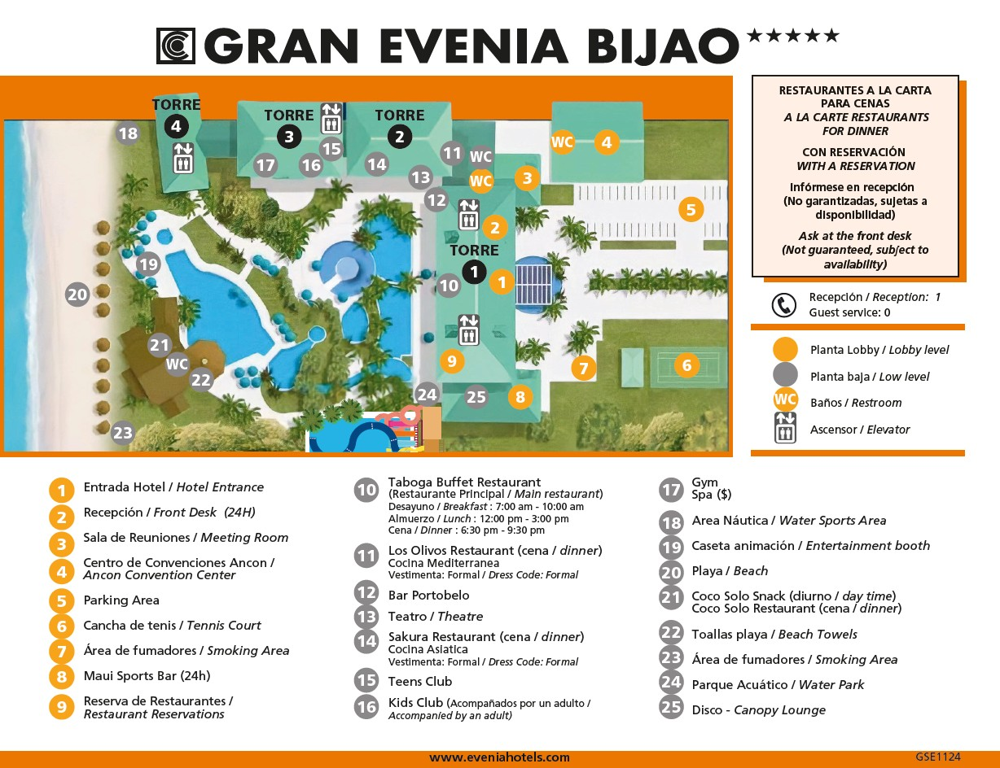
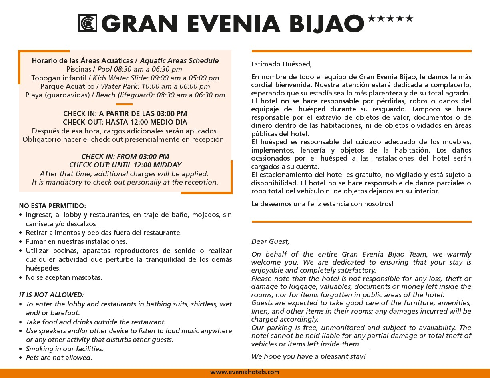
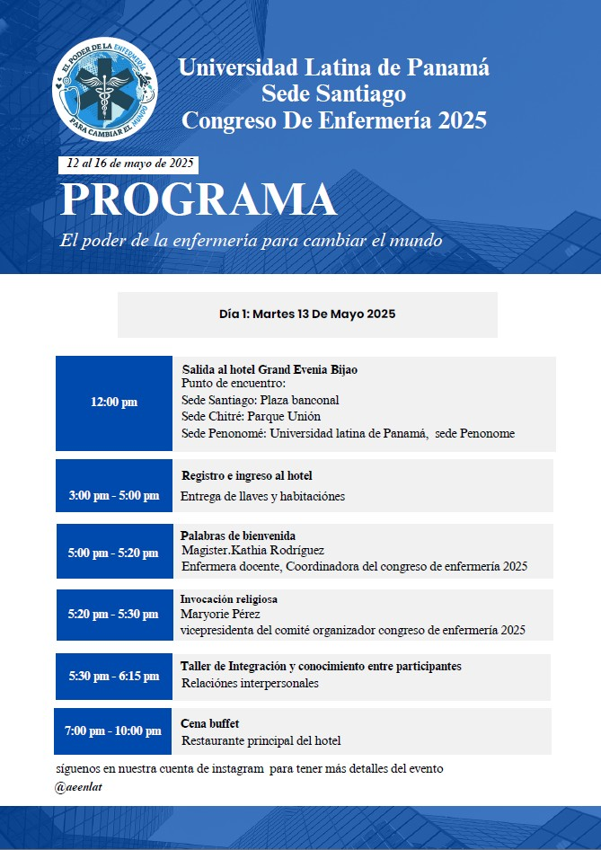
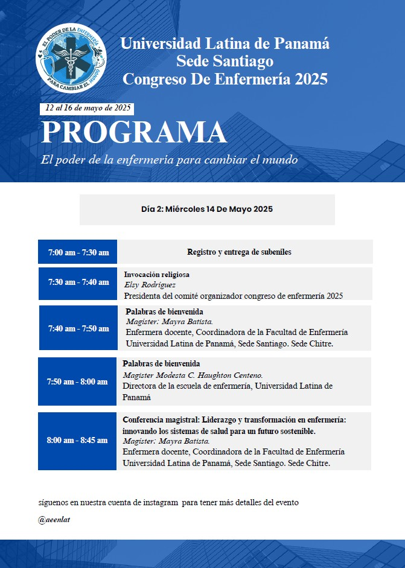
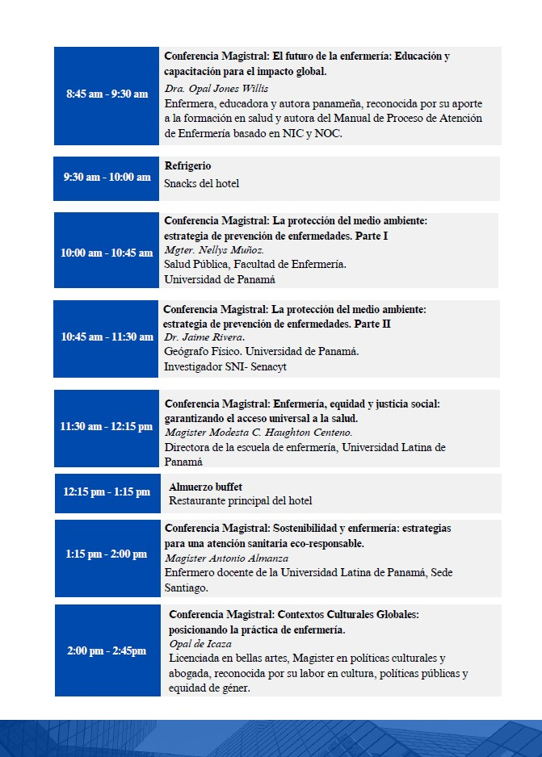
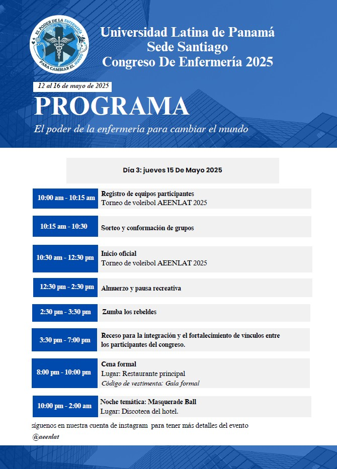
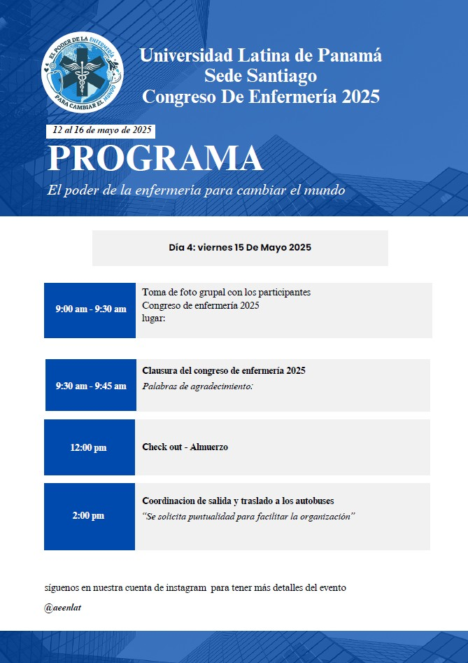
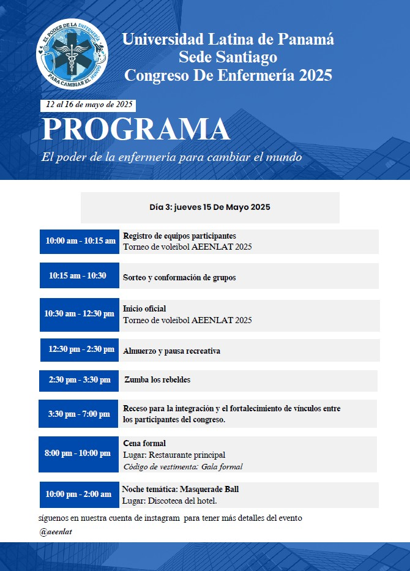
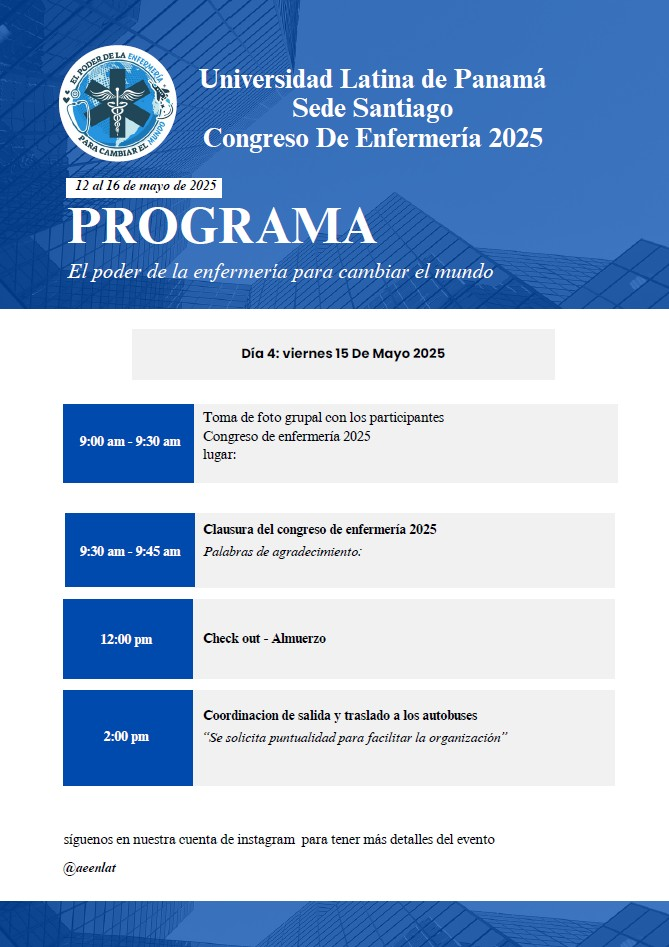

Bienvenidos al Congreso de Enfermería 2025
Un evento para compartir conocimientos, experiencias y formar conexiones significativas entre profesionales y estudiantes del área de la salud.
Misión
Organizar un congreso de enfermería que promueva principalmente el intercambio de conocimientos, experiencias y habilidades entre profesionales y estudiantes de enfermería, con la finalidad de elevar la capacitación y actualización mediante docencias con temas innovadores que garanticen la calidad en la atención humana. Es importante impactar positivamente en la profesión al ofrecer contenido de alta calidad impartido por expertos, creando un espacio que potencie el aprendizaje teórico y práctico, a través de conferencias, talleres y actividades interactivas donde las relaciones interpersonales y el trabajo en equipo sean pilares para mejorar y transformar el empoderamiento a los futuros enfermeros y enfermeras, permitiéndoles desarrollar sus habilidades de liderazgo, aprendizaje e investigación para que puedan contribuir al bienestar de cada individuo, comunidad y a cada sistema de salud.
Visión
Buscamos capacitar y formar al grupo de estudiantes de enfermería promoviendo la innovación y la excelencia en el cuidado de la salud, proporcionando un entorno donde se puedan adquirir las competencias necesarias para enfrentar los retos presentes y futuros. Queremos inspirar a la próxima generación de profesionales de la salud a tomar el liderazgo en la transformación de la salud mundial, aplicando el poder de su vocación para cambiar vidas y comunidades, con un enfoque dirigido a mejorar el sistema de salud.
Objetivos del Congreso
Objetivo General
* Proporcionar un espacio educativo, para fomentar el conocimiento y éxito académico de nuestros compañeros de licenciatura en enfermería, fortaleciendo su participación en el aprendizaje de la atención integral del paciente, para que sea agente de cambio y de este modo lograr una verdadera transformación en nuestros sistemas de salud.
Objetivos Específicos
- * Brindar formación teórica y práctica sobre las últimas tendencias, investigaciones y avances en el campo de la enfermería, para que los estudiantes puedan aplicarlos en su futura práctica profesional y en el ámbito laboral.
- * Establecer la importancia de influir de manera positiva en cuidado integral del paciente y contribuir de manera eficaz eficiente y oportuna en las mejoras de nuestro sistema sanitario a través de la investigación y educación continua de nuestros estudiantes.
- * Desarrollar habilidades de liderazgo y toma de decisiones éticas, preparando a los estudiantes para asumir roles protagónicos en el cuidado de la salud y la gestión de equipos de trabajo.
- * Promover el trabajo en equipo y la colaboración interdisciplinaria fortaleciendo la capacidad de los futuros profesionales para interactuar eficazmente con otros profesionales de la salud en el cuidado integral de los pacientes.
- * Impulsar el compromiso social y profesional de los estudiantes, con la finalidad de sensibilizarlos sobre la importancia del papel de la enfermería en la transformación de la salud global.
Mapa
Ubicación del evento:
 Cronograma de actividades
   



Encuesta de Satisfacción
Queremos conocer tu opinión sobre el evento. Por favor, accede a la encuesta a través del siguiente enlace:
Completar EncuestaInformación General
Lugar: Hotel Gran Evenia Bijao
Fecha: 13 al 16 de Mayo del 2025